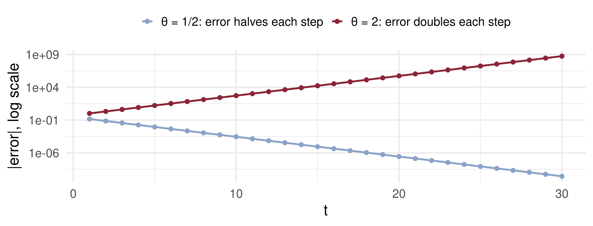
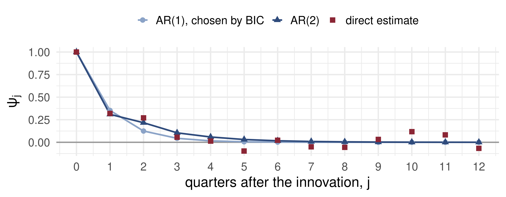

Lecture 7: Linear Projection, Innovations and the Wold Decomposition
Open lecture notes, after Stanislav Anatolyev’s course (2016)
⬅ Previous lecture: 6 · Data Snooping, Superior Predictive Ability, Model Confidence Sets
A short film with the intuition. Watch it before the slides, or after. Captions: CC button.
By the end of this lecture, you will be able to:
In the model confidence set procedure of Hansen, Lunde and Nason (2011), what happens when the equivalence hypothesis \(H_{0,\mathcal M}\) (all models in the current set \(\mathcal M\) have equal expected loss) is rejected?
Lectures 4–6 compared models by what they predict: information criteria, out-of-sample loss, Diebold–Mariano, and finally the model confidence set for many models at once.
Every one of those forecasts was an estimate of the same object, the conditional mean \[\mu_t = E_{t-1}x_t = E[x_t \mid x_{t-1}, x_{t-2}, \dots].\] Today we start modelling it. Linear models approximate \(\mu_t\) by the best linear predictor, and one theorem, Wold’s, says how far that approximation can be pushed for any stationary series.
How long does a surprise in output last?
US real GDP grew 2% faster than expected this quarter. How much of that surprise is still in the growth rate a year from now? Does it fade, or does it echo?
To answer, we need to write growth as a sum of past surprises with weights: \(x_t = \mu + \varepsilon_t + \psi_1\varepsilon_{t-1} + \psi_2\varepsilon_{t-2} + \dots\). The weight \(\psi_j\) is the answer for horizon \(j\). Two questions remain: what exactly is a “surprise”, and does every stationary series admit such a sum?
For \(y = x'\beta + e\):
| criterion | solution | |
|---|---|---|
| Population (no data) | \(\min_b E[(y - x'b)^2]\) | \(\beta = (E[xx'])^{-1}E[xy]\) |
| Sample (OLS) | \(\min_b \sum_t (y_t - x_t'b)^2\) | \(\hat\beta = (X'X)^{-1}X'Y\) |
The population \(\beta\) is a property of the joint distribution. It satisfies \(E[xe] = 0\) by construction, whatever the true relation between \(y\) and \(x\). Under stationarity and ergodicity the sample moments converge to the population ones, so \(\hat\beta \xrightarrow{p} \beta\). For the same reason we may treat \(E[x_t]\) as known: the sample mean estimates it consistently.
Least-squares (linear) projection
Let \(\Omega_{t-1} = \{x_{t-1}, x_{t-2}, \dots\}\). The projection of \(x_t\) on \(\Omega_{t-1}\) is \[\operatorname{Proj}(x_t \mid \Omega_{t-1}) = \alpha_0 + \sum_{i=1}^{\infty}\alpha_i x_{t-i},\] where \((\alpha_0, \alpha_1, \dots)\) minimise \(E\big[(x_t - \alpha_0 - \sum_{i\ge1}\alpha_i x_{t-i})^2\big]\) subject to \(\sum_{i\ge1}\alpha_i^2 < \infty\).
It is the population regression of \(x_t\) on its entire past. The square-summability constraint keeps the infinite sum well defined; it will decide the non-invertible case below.
Definition
The least-squares (linear) innovation is \(\ \varepsilon_t = x_t - \operatorname{Proj}(x_t \mid \Omega_{t-1}).\)
Theorem (Wold, 1938)
Let \(x_t\) be stationary and ergodic with \(\operatorname{var}(x_t) < \infty\), and purely nondeterministic. Then \[x_t = E[x_t] + \sum_{j=0}^{\infty}\psi_j\,\varepsilon_{t-j}, \qquad \psi_0 = 1, \qquad \sum_{j=0}^{\infty}\psi_j^2 < \infty,\] where \(\varepsilon_t = x_t - \operatorname{Proj}(x_t \mid \Omega_{t-1})\) are the least-squares innovations.
“Purely nondeterministic” excludes a component, such as \(a\cos(wt)\) with random \(a\), that the infinite past predicts perfectly. In general such a component is simply added.
\(x_t = \rho x_{t-1} + \varepsilon_t\), \(|\rho| < 1\), \(\varepsilon_t\) i.i.d. white noise.
Projection. Back-substitution gives \(x_{t-1} = \sum_{j\ge0}\rho^j\varepsilon_{t-1-j}\), a function of past \(\varepsilon\) only. So \(\varepsilon_t\) is uncorrelated with all of \(\Omega_{t-1}\), and \(\rho x_{t-1}\) satisfies the normal equations: \[\operatorname{Proj}(x_t \mid \Omega_{t-1}) = \rho x_{t-1}, \qquad x_t - \operatorname{Proj}(x_t \mid \Omega_{t-1}) = \varepsilon_t.\]
Wold. The model’s \(\varepsilon_t\) is the LS innovation, and \[x_t = \sum_{j=0}^{\infty}\rho^j\varepsilon_{t-j}, \qquad IRF(j) = \rho^j.\] A shock decays geometrically; for \(\rho < 0\) it also alternates in sign.
ar1 = {
const x = []; let prev = 0;
for (let t = 0; t < shocks.length; t++) { prev = rho * prev + shocks[t]; x.push({t: t + 1, x: prev}); }
const xs = x.map(d => d.x), m = d3.mean(xs), n = xs.length;
const g0 = d3.sum(xs, v => (v - m) ** 2) / n;
const acf = Array.from({length: 16}, (_, j) => ({
j, irf: rho ** j,
sample: d3.sum(d3.range(n - j), i => (xs[i] - m) * (xs[i + j] - m)) / n / g0}));
return {x, acf};
}html`<div style="display:flex; gap:20px; justify-content:center">${
Plot.plot({width: 600, height: 310, marginLeft: 60, marginBottom: 50, marginTop: 34, clip: true, style: {fontSize: "18px"},
x: {label: "t"}, y: {label: "xₜ", domain: [-15, 15]},
marks: [Plot.ruleY([0], {stroke: "#bbb"}), Plot.line(ar1.x, {x: "t", y: "x", stroke: "#2f4b7c"})]})
}${
Plot.plot({width: 500, height: 310, marginLeft: 60, marginBottom: 50, marginTop: 34, style: {fontSize: "18px"},
x: {label: "lag j"}, y: {label: "ψⱼ = ρʲ", domain: [-1, 1]},
marks: [Plot.ruleY([0]), Plot.barY(ar1.acf, {x: "j", y: "irf", fill: "#8ba3c7"}),
Plot.dot(ar1.acf, {x: "j", y: "sample", fill: "#8b2635", r: 5})]})
}</div>`Bars: \(IRF(j) = \rho^j\), which for an AR(1) is also the autocorrelation. Red dots: sample ACF of the path. Push \(\rho\) to 0.98 and watch the long swings.
\(x_t = \varepsilon_t + \tfrac12\varepsilon_{t-1}\), \(\operatorname{var}\varepsilon_t = \sigma^2\). Substitute \(x_{t-i} = \varepsilon_{t-i} + \tfrac12\varepsilon_{t-i-1}\): \[E\Big[\Big(x_t - \sum_{i\ge1}\alpha_i x_{t-i}\Big)^2\Big] = E\Big[\Big(\varepsilon_t + \big(\tfrac12 - \alpha_1\big)\varepsilon_{t-1} - \big(\alpha_2 + \tfrac12\alpha_1\big)\varepsilon_{t-2} - \dots\Big)^2\Big]\] \[= \sigma^2\Big[1 + \big(\tfrac12 - \alpha_1\big)^2 + \sum_{j\ge2}\big(\alpha_j + \tfrac12\alpha_{j-1}\big)^2\Big].\]
Each bracket can be set to zero: \(\alpha_1 = \tfrac12\), \(\alpha_j = -\tfrac12\alpha_{j-1}\), so \[\alpha_j = -\big(-\tfrac12\big)^j: \quad \alpha_1 = \tfrac12,\ \alpha_2 = -\tfrac14,\ \alpha_3 = \tfrac18, \dots\] These are square summable, the minimum is \(\sigma^2\), and the prediction error is exactly \(\varepsilon_t\).
\[x_t = \big(1 + \tfrac12 L\big)\varepsilon_t \ \Longrightarrow\ \varepsilon_t = \big(1 + \tfrac12 L\big)^{-1}x_t = \Big(1 - \frac L2 + \frac{L^2}{4} - \frac{L^3}{8} + \dots\Big)x_t\] \[\varepsilon_t = x_t - \tfrac12 x_{t-1} + \tfrac14 x_{t-2} - \dots, \qquad \operatorname{Proj}(x_t \mid \Omega_{t-1}) = -\sum_{i=1}^{\infty}\big(-\tfrac12\big)^i x_{t-i}.\]
So \(\varepsilon_t\) is recoverable from the past and present of \(x\): it is the LS innovation, and the MA(1) is its own Wold decomposition. In \(x_t = \varepsilon_t + \tfrac12\varepsilon_{t-1}\), the term \(\varepsilon_t\) is the unpredictable part and \(\tfrac12\varepsilon_{t-1}\) is the part predictable from \(\Omega_{t-1}\).
\(x_t = \varepsilon_t + 2\varepsilon_{t-1}\). The same recursion now gives \(\alpha_1 = 2\), \(\alpha_j = -2\alpha_{j-1}\), so \(\alpha_j = -(-2)^j\) and \(\sum\alpha_j^2 = \infty\). This is not an admissible projection: \(\varepsilon_t\) cannot be recovered from the past of \(x\), and it is not the LS innovation.
Match second moments instead. With \(\operatorname{var}\varepsilon_t = \sigma^2\): \[\gamma_0 = (1 + 4)\sigma^2 = 5\sigma^2, \qquad \gamma_1 = 2\sigma^2, \qquad \gamma_j = 0,\ j \ge 2.\] An MA(1) with \(\theta = \tfrac12\) and variance \(4\sigma^2\) has \(\gamma_0 = \tfrac54\cdot4\sigma^2 = 5\sigma^2\) and \(\gamma_1 = \tfrac12\cdot4\sigma^2 = 2\sigma^2\). Hence the Wold decomposition is \[x_t = \tilde\varepsilon_t + \tfrac12\tilde\varepsilon_{t-1}, \qquad \tilde\varepsilon_t = \frac{1 + 2L}{1 + \tfrac12 L}\,\varepsilon_t, \qquad \operatorname{var}\tilde\varepsilon_t = 4\sigma^2.\]
Rule
An MA(1) with \(|\theta| > 1\) and innovation variance \(\sigma^2\) has the same autocovariances as the MA(1) with parameter \(1/\theta\) and variance \(\theta^2\sigma^2\). The Wold decomposition always picks the invertible one, \(|\theta| < 1\).
n <- 20000
e <- rnorm(n + 1, sd = 1) # structural shocks, sigma = 1
x2 <- e[-1] + 2 * e[-(n + 1)] # theta = 2: non-invertible
u <- rnorm(n + 1, sd = 2) # sigma = 2
xh <- u[-1] + 0.5 * u[-(n + 1)] # theta = 1/2: invertible
acfs <- rbind(theta_2 = acf(x2, 3, plot = FALSE)$acf[2:4],
theta_half = acf(xh, 3, plot = FALSE)$acf[2:4])
colnames(acfs) <- paste0("lag", 1:3); round(acfs, 3) lag1 lag2 lag3
theta_2 0.400 0.003 0.004
theta_half 0.399 0.009 0.011 var_tilde acf1_tilde cor_with_true_shock
4.030 -0.002 0.497 Both rows match \(\rho_1 = 2/5 = 0.4\). The Wold innovation has variance \(\approx 4\), is white, and correlates only \(\approx 0.5\) with the true shock.

Recovering \(\varepsilon_t = x_t - \theta\varepsilon_{t-1}\) from an unknown start: the starting error is multiplied by \(-\theta\) every period. For \(\theta = 2\) it explodes, so the past of \(x\) never pins the shock down.
\(x_t = \varepsilon_t - 0.8\,\varepsilon_{t-1}\), \(\varepsilon_t\) i.i.d. \((0, 1)\). Find \(\alpha_1, \alpha_2, \alpha_3\) in \(\operatorname{Proj}(x_t \mid \Omega_{t-1}) = \sum_i \alpha_i x_{t-i}\).
\(z_t = \eta_t - 1.25\,\eta_{t-1}\), \(\eta_t\) i.i.d. \((0, 1)\). Write its Wold decomposition: the MA parameter and the innovation variance.
What are \(IRF(1)\) and \(IRF(2)\) of \(z_t\) with respect to its LS innovation?
Lecture 2’s long-run variance has a compact form in Wold weights. With \(\psi(1) = \sum_j\psi_j\), \[V_x = \sum_{j=-\infty}^{\infty}\gamma_j = \sigma^2\,\psi(1)^2, \qquad \sqrt T(\bar x_T - E x_t) \xrightarrow{d} N\big(0,\ \sigma^2\psi(1)^2\big).\]
| process | \(\psi(1)\) | \(V_x\) |
|---|---|---|
| AR(1), \(\lvert\rho\rvert < 1\) | \(1/(1 - \rho)\) | \(\sigma^2/(1 - \rho)^2\) |
| MA(1) | \(1 + \theta\) | \((1 + \theta)^2\sigma^2\) |
\(\psi(1)\) is also the cumulative impulse response: the total effect of one innovation summed over all future dates.
📈 The question
How long does a growth surprise echo?
gdp <- read.csv("data/GDPC1.csv")
x <- 400 * diff(log(gdp$GDPC1)) # annualised % growth
X <- embed(x, 9); n <- nrow(X) # x_t and 8 lags, common sample
ols <- function(p) if (p == 0) lm(X[, 1] ~ 1) else lm(X[, 1] ~ X[, 2:(p + 1), drop = FALSE])
bic <- sapply(0:8, function(p) log(mean(resid(ols(p))^2)) + (p + 1) * log(n) / n)
psi_ar <- function(phi, J) { # psi_j = sum_k phi_k psi_{j-k}
psi <- c(1, numeric(J))
for (j in 1:J) for (k in seq_along(phi)) if (j >= k) psi[j + 1] <- psi[j + 1] + phi[k] * psi[j - k + 1]
psi }
phi1 <- coef(ols(1))[-1]; phi2 <- coef(ols(2))[-1]
eps <- resid(ols(2)); xs <- X[, 1] - mean(X[, 1])
direct <- sapply(0:12, function(j) sum(xs[(1 + j):n] * eps[1:(n - j)]) / sum(eps^2))
tab <- rbind(AR1 = psi_ar(phi1, 4), AR2 = psi_ar(phi2, 4), direct = direct[1:5])
colnames(tab) <- paste0("j=", 0:4)
list(p_by_BIC = which.min(bic) - 1, BIC_AR2_minus_AR1 = round(bic[3] - bic[2], 4),
psi = round(tab, 3))$p_by_BIC
[1] 1
$BIC_AR2_minus_AR1
[1] 0.0049
$psi
j=0 j=1 j=2 j=3 j=4
AR1 1 0.353 0.125 0.044 0.016
AR2 1 0.310 0.217 0.105 0.059
direct 1 0.319 0.271 0.056 0.014Read the columns \(j = 0, \dots, 4\). “direct” is \(\widehat{\operatorname{cov}}(x_{t+j}, \hat\varepsilon_t)/\widehat{\operatorname{var}}(\hat\varepsilon_t)\), which estimates \(\psi_j\) without an AR model.

What the data say: a third of a growth innovation survives one quarter and almost none survives a year. BIC’s AR(1) understates the second-quarter echo (\(0.125\) against \(0.27\) directly); AR(2) repairs most of it, and beyond a year the direct estimates are noise.
\(x_t\) is stationary and \(\varepsilon_t = x_t - \operatorname{Proj}(x_t \mid x_{t-1}, x_{t-2}, \dots)\). Which statement is true in general?
\(x_t = \varepsilon_t + 3\varepsilon_{t-1}\) with \(\operatorname{var}\varepsilon_t = 1\). Its Wold decomposition is \(x_t = \tilde\varepsilon_t + \tilde\theta\,\tilde\varepsilon_{t-1}\) with
For the AR(1) \(x_t = 0.5\,x_{t-1} + \varepsilon_t\), what is the effect on \(x_{t+3}\) of a unit innovation at \(t\), and what is the cumulative effect \(\psi(1)\)?
| Population projection | \(\beta = (E[xx'])^{-1}E[xy]\), \(\ E[xe] = 0\) |
| Projection on the past | \(\operatorname{Proj}(x_t \mid \Omega_{t-1}) = \alpha_0 + \sum_{i\ge1}\alpha_i x_{t-i}\), \(\sum\alpha_i^2 < \infty\) |
| LS innovation | \(\varepsilon_t = x_t - \operatorname{Proj}(x_t \mid \Omega_{t-1})\) |
| Wold | \(x_t = E x_t + \sum_{j\ge0}\psi_j\varepsilon_{t-j}\), \(\psi_0 = 1\), \(\sum\psi_j^2 < \infty\) |
| AR(1) | \(\psi_j = \rho^j\) |
| Invertible MA(1) | \(\alpha_j = -(-\theta)^j\), \(\lvert\theta\rvert < 1\) |
| Non-invertible MA(1) | \((\theta, \sigma^2) \to (1/\theta,\ \theta^2\sigma^2)\) |
| Long-run variance | \(V_x = \sigma^2\psi(1)^2\) |
Next lecture: ARMA Models: Identification, Estimation, Forecasting.
Time Series Econometrics — Wold Decomposition